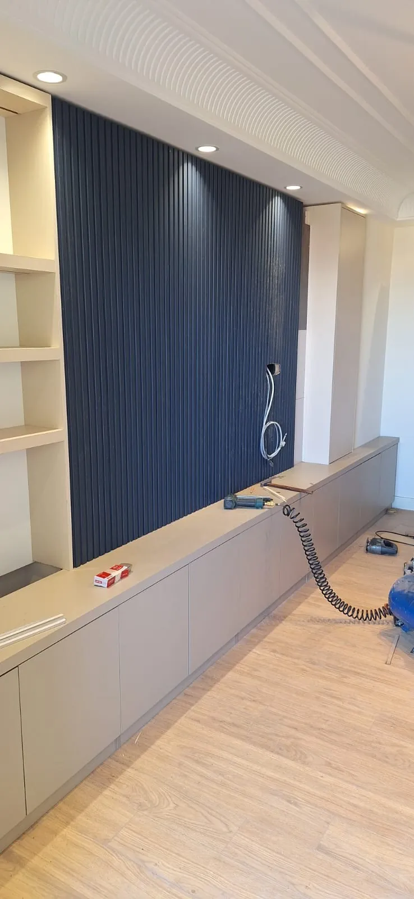

Αναλαμβάνετε έργα εκτός Τουρκίας;
Ναι. Αξιολογούμε έργα στα Βαλκάνια με βάση την τοποθεσία, το αντικείμενο, την παραγωγή, τη μεταφορά και την τοποθέτηση.
Η Öder Mimarlık σχεδιάζει και συντονίζει έπιπλα κατά παραγγελία, κουζίνες, δάπεδα, εμπορικούς χώρους και περίπτερα σε εκθέσεις υφασμάτων.
Ναι. Αξιολογούμε έργα στα Βαλκάνια με βάση την τοποθεσία, το αντικείμενο, την παραγωγή, τη μεταφορά και την τοποθέτηση.
Στείλτε χώρα, περίπου επιφάνεια, ζητούμενη υπηρεσία, εικόνες αναφοράς και επιθυμητή ημερομηνία.
Εσωτερική αρχιτεκτονική, έπιπλα κατά παραγγελία, κουζίνες, δάπεδα, κατοικίες και περίπτερα εκθέσεων υφασμάτων.
Η Öder Mimarlık σχεδιάζει και συντονίζει έπιπλα κατά παραγγελία, κουζίνες, δάπεδα, εμπορικούς χώρους και περίπτερα σε εκθέσεις υφασμάτων.
Δημιουργήστε έναν προσωπικό πίνακα ιδεών από μια φωτογραφία του δωματίου σας και ένα στυλ που σας αρέσει. Η φωτογραφία σας παραμένει σε αυτό το πρόγραμμα περιήγησης.
Η φωτογραφία έμπνευσης δεν φεύγει από τη συσκευή σας.
Πρόκειται για έναν αρχικό πίνακα ιδεών που προτείνει οπτικό στυλ και κατεύθυνση υλικών· δεν είναι εκδοχή της φωτογραφίας σας επανασχεδιασμένη με τεχνητή νοημοσύνη ούτε μελέτη εφαρμογής.
Η Öder Mimarlık σχεδιάζει και συντονίζει έπιπλα κατά παραγγελία, κουζίνες, δάπεδα, εμπορικούς χώρους και περίπτερα σε εκθέσεις υφασμάτων.
 01
01Χώροι διαβίωσης που συνδυάζουν άνεση, χρώματα και τις μικρές λεπτομέρειες που είναι δικές σας.
 02
02Έξυπνη αποθήκευση, καλά υλικά και καθαρές γραμμές.
 03
03Ας επιλέξουμε υφή και απόχρωση σε αρμονία με όλο τον χώρο.

04Χαρούμενα και λειτουργικά δωμάτια που αφήνουν χώρο για να μεγαλώσουν τα παιδιά.
 05
05Ξεκινά εκεί όπου ρωτάτε: «Είναι δυνατόν κάτι τέτοιο;»
Αυτοψία, ιδέα, υλικά και σχεδιαστική υποστήριξη προσαρμοσμένη στον χώρο.
Πρώτα σας ακούμε. Έπειτα ανακαλύπτουμε μαζί τη διάταξη, τις υφές και τα χρώματα που ταιριάζουν στην καθημερινότητά σας. Το αποτέλεσμα: ένας χώρος που δεν είναι μόνο όμορφος, αλλά και σας κάνει να νιώθετε καλά.
Ας γνωριστούμε ↗Σχεδιασμός που δίνειΚάθε έργο είναι μια νέα ιστορία. Σε τι είδους χώρο θέλει να ζει η δική σας ιστορία;


Οι φωτογραφίες επιλέχθηκαν από το αρχείο έργων μας. Οι λεζάντες περιγράφουν τον χώρο που φαίνεται· δεν περιέχουν πληροφορίες για έργα ή πελάτες.
Δείτε λεπτομέρειες εφαρμογής επίπλων για καταστήματα, εκθεσιακούς χώρους, κουζίνες και αποθήκευση, το καθένα με τον τίτλο του αντίστοιχου χώρου.
Είμαστε ανοιχτοί σε συνεργασίες με εταιρείες επίπλων, καταστήματα οικοδομικών υλικών και ομάδες λιανικής για προϊόντα κατά παραγγελία, μονάδες προβολής, έπιπλα καταστημάτων και επαναλήψιμες λύσεις εσωτερικών χώρων.
Bauhaus, IKEA ve benzeri markaların satın alma, kategori ve mağaza tasarım ekipleri; hedef ürün grubu, adet, teknik şartname ve teslimat bölgesini paylaşarak ön görüşme talep edebilir.
Ξεκινήστε συζήτηση για εταιρική προσφορά ↗Επιλέξτε τύπο έργου, εμβαδόν, προτίμηση υλικού και χώρα εφαρμογής. Ετοιμάστε το εύρος εργασιών σε λίγα δευτερόλεπτα και προσθέστε το στο προκαταρκτικό σας αίτημα.
Το προκαταρκτικό εύρος υπολογίζεται με βάση την κατηγορία του έργου, την επιλεγμένη ποιότητα και τον συντελεστή χώρας. Η αυτόματη αυτή εκτίμηση δεν αντικαθιστά την αυτοψία και την επίσημη προσφορά.
Το εύρος τιμών που εμφανίζεται είναι κατά προσέγγιση εκτίμηση με βάση τις αναφερόμενες τιμές ανά m² και τους συντελεστές· η αυτοψία, η μεταφορά, οι φόροι, η εφαρμογή και οι όροι προμήθειας μπορούν να αλλάξουν την τελική προσφορά.
Ας αξιολογήσουμε μαζί τα έργα εσωτερικών χώρων σας στην Τουρκία και την Ευρώπη. Μοιραστείτε την τοποθεσία και το εύρος του έργου και θα συζητήσουμε τον τρόπο συνεργασίας που σας ταιριάζει.
Γνωρίζουμε τις ανάγκες, τις προτιμήσεις, την τοποθεσία και τις προτεραιότητές σας.
Ορίζουμε μαζί το εύρος, τη σχεδιαστική προσέγγιση και τα επόμενα βήματα.
Υλοποιούμε τη λύση που συμφωνήσαμε, στο πλαίσιο του καθορισμένου εύρους και της διαδικασίας.
Έχετε ερωτήσεις για το έργο σας; Περιγράψτε το σύντομα στο πρώτο σας μήνυμα και θα το εξετάσουμε μαζί.
Εργαζόμαστε σε αρχιτεκτονική εσωτερικών χώρων και σχεδιασμό χώρων, έπιπλα και διακόσμηση, κουζίνες και ντουλάπες κατά παραγγελία, δάπεδα, διαμόρφωση σαλονιού, καθιστικού και παιδικού δωματίου, καθώς και σε ειδικά έργα. Το εύρος του έργου σας το ορίζουμε στην πρώτη συνάντηση.
Εξετάζουμε τα αιτήματά σας για έργα στην Τουρκία και την Ευρώπη. Μοιραστείτε την τοποθεσία, το εύρος του έργου και την υπηρεσία που χρειάζεστε και θα συζητήσουμε μαζί τον κατάλληλο τρόπο συνεργασίας.
Η εκτίμηση υπολογίζεται ως εμβαδόν × τιμή μονάδας κατηγορίας × συντελεστής ποιότητας × συντελεστής χώρας. Για ακραία έργα άνω των 100 m² προστίθεται αμοιβή συμβουλευτικής 10%. Το αποτέλεσμα είναι κατά προσέγγιση εύρος· η τελική προσφορά ορίζεται μετά τον έλεγχο διαστάσεων και εύρους.
Η τοποθεσία του έργου, ο χώρος ή το δωμάτιο που σκέφτεστε, η αλλαγή που επιδιώκετε, ο κατά προσέγγιση χρόνος και τυχόν εικόνες έμπνευσης αποτελούν καλή αρχή. Αν έχετε προϋπολογισμό, η αναφορά του βοηθά να διαμορφωθεί σωστά η πρόταση.
Ανάλογα με τις ανάγκες, μπορεί να εξεταστεί υποστήριξη με έμφαση στον σχεδιασμό ή εργασία που καλύπτει σχεδιασμό και υλοποίηση. Το εύρος και η κατάλληλη υπηρεσία ορίζονται στην πρώτη συνάντηση.
Περιγράψτε σύντομα την τοποθεσία, το μέγεθος και τις ανάγκες του έργου σας. Μετά την εξέταση των στοιχείων, θα σας παρουσιάσουμε το εύρος και τη διαδικασία προσφοράς.
Πείτε μας τι έχετε στο μυαλό σας. Στην πρώτη μας συζήτηση θα δούμε τις ανάγκες του έργου και τα πιθανά επόμενα βήματα.